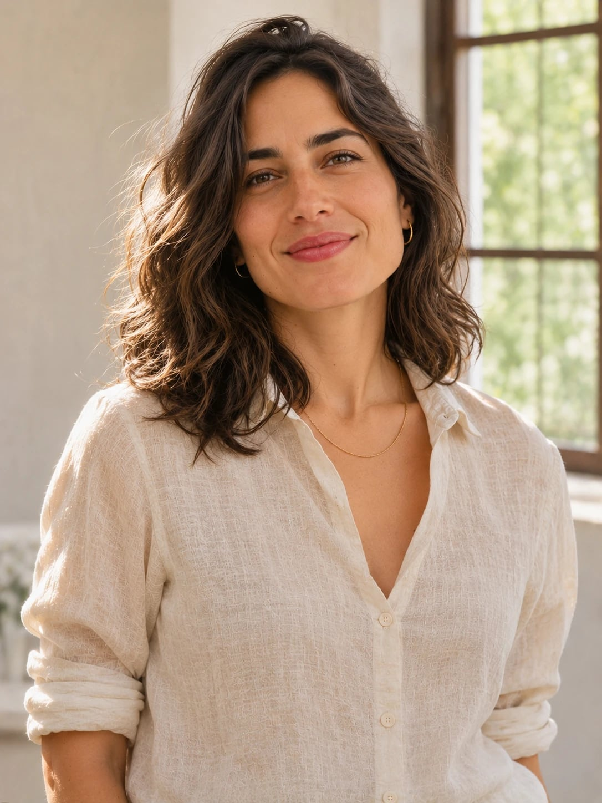
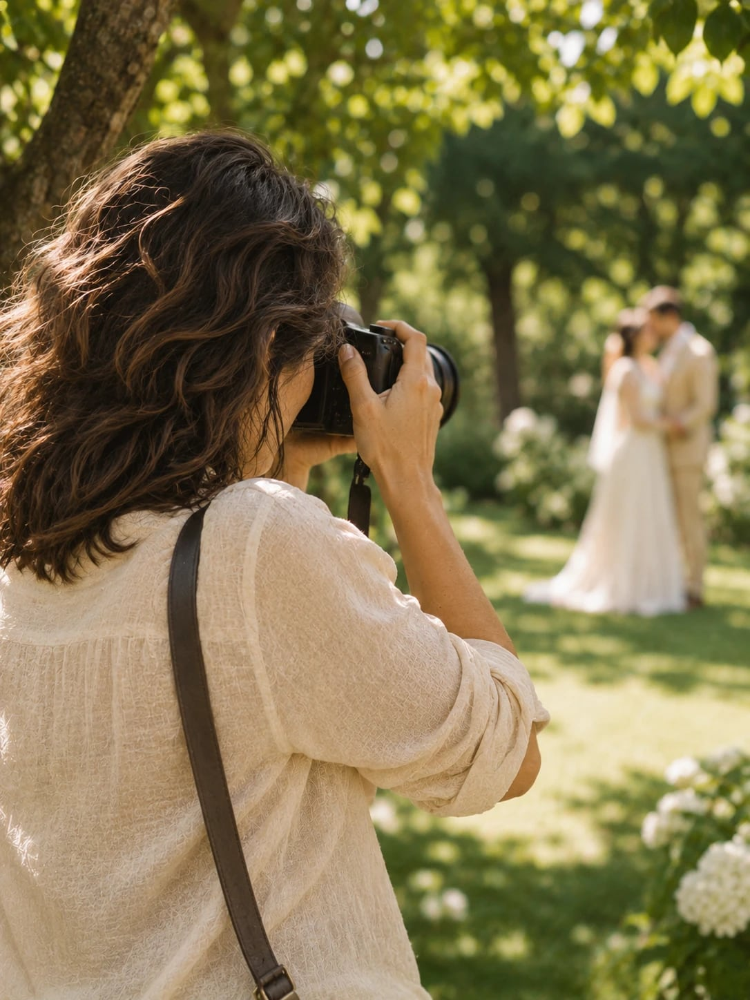
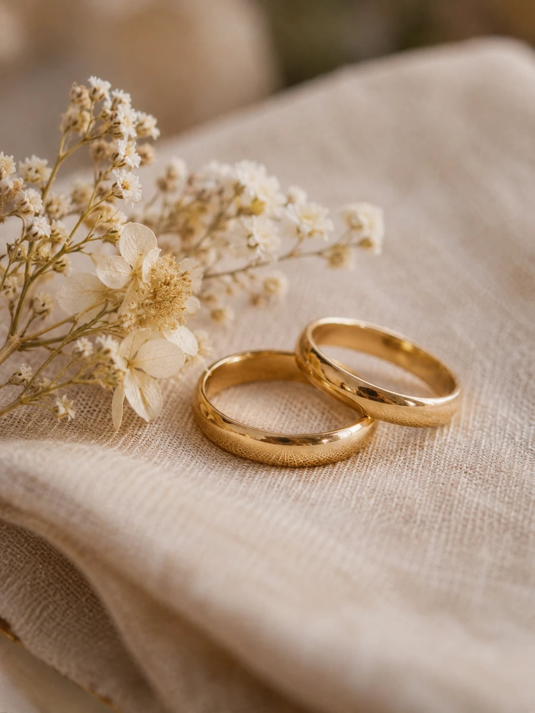
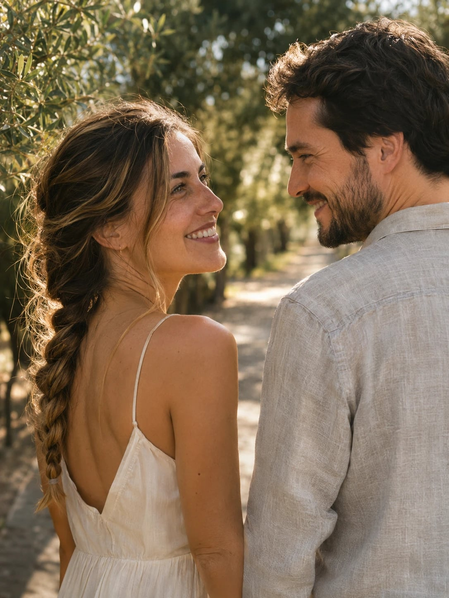

Hola, soy [TU NOMBRE]
Fotógrafa de bodas en [CIUDAD]. Me dedico a contar tu día como fue: sin guion, sin prisa y con mucho cariño.

Mi historia
Empecé fotografiando los momentos de mi propia familia y me enamoré de las bodas porque ahí pasa todo a la vez: los nervios, las risas y la emoción de verse.
Creo que las mejores fotos de una boda no se piden: ocurren. Por eso estoy cerca, pero casi invisible, y dejo que la emoción haga su trabajo.
Mi estilo es natural y luminoso: busco la luz del día, dirijo lo justo para que se sientan cómodos y he fotografiado en playas, jardines y casas de campo.
ConversemosCómo trabajo contigo
- 01
Nos conocemos
Hablamos de tu boda, de lo que sueñas y de lo que no quieres. Puede ser por videollamada, por mensajes o en persona, como te quede mejor.
- 02
Planificamos el día
Revisamos horarios, lugares y momentos importantes para que el día fluya y no tengas que pensar en las fotos.
- 03
Recibes tu historia
Te entrego tu galería editada en [PLAZO DE ENTREGA], lista para descargar, compartir y guardar para siempre.



Me encantaría conocer tu historia
Escríbeme y cuéntame cómo imaginas tu boda.
Escríbeme